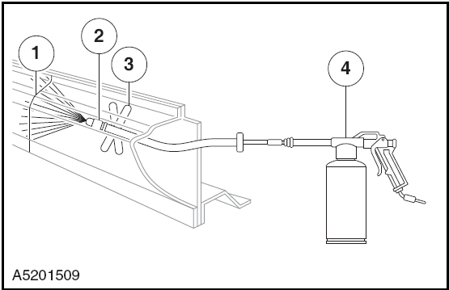
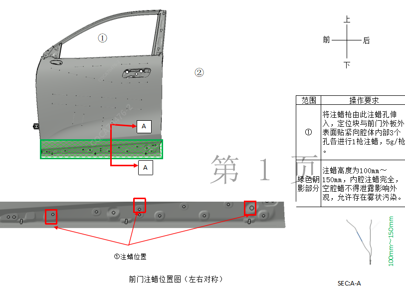
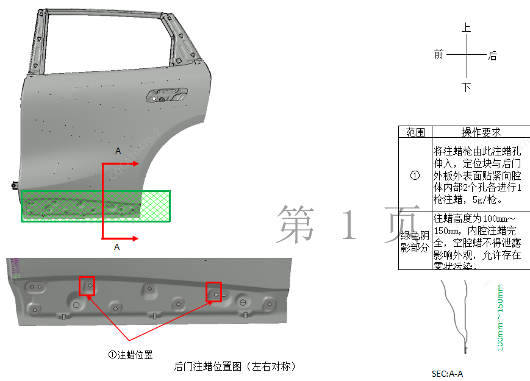
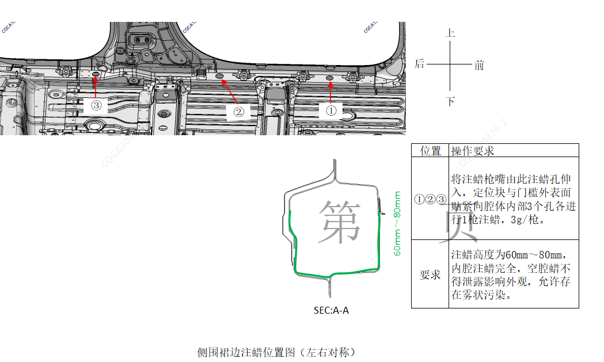
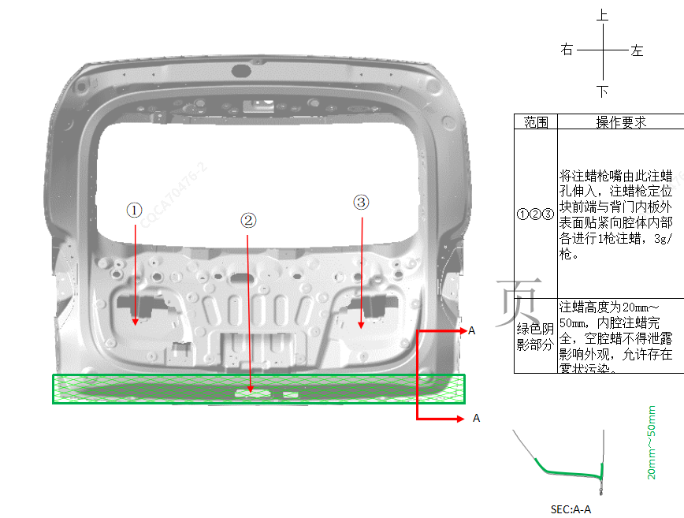
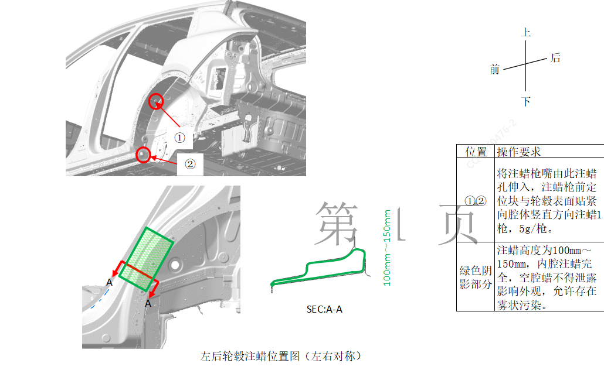

| Пункт | Описание |
|---|---|
|
1 |
Сварной шов |
|
2 |
Сопло |
|
3 |
Дистанционное позиционирование |
|
4 |
Краскопульт |

После замены новых деталей или локального ремонта исходных деталей необходимо выполнить воскование для защиты в соответствии с требованиями к местам воскования для конкретной модели автомобиля; ниже показаны зоны воскования скрытых полостей кузова (зеленая штриховка), конкретные места воскования для каждой модели автомобиля см. по аналогии с соответствующими местами на исходном кузове;
Требования к воскованию: воскование должно быть достаточным и полным.|
a Передняя дверь (симметрично слева и справа) |
 |
|
b Задняя дверь (симметрично слева и справа) |
 |
|
c Кромка порога боковины (симметрично слева и справа) |
 |
|
d Дверь задка |
 |
|
e Чашка заднего колеса (симметрично слева и справа) |
 |
Полости после выполнения сварочных работ требуют обработки для защиты скрытых полостей путем воскования внутренних сварных швов;
Для впрыска защитного воска в труднодоступные зоны сначала просверлите отверстие в подходящем месте, диаметр отверстия определяется в зависимости от доступной заглушки. При сверлении полностью удалите металлическая стружка из полости, так как любые остатки стружки могут вызвать коррозию. Края отверстия необходимо обработать воском для закрытия отверстий, покрыть антикоррозионная грунтовка и в завершение закрыть отверстие заглушкой или герметиком.